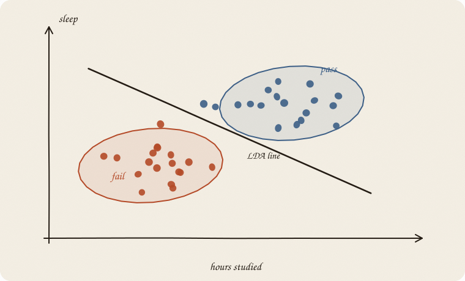
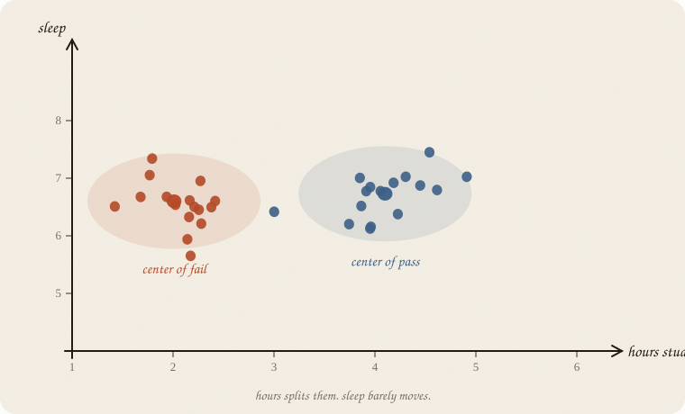
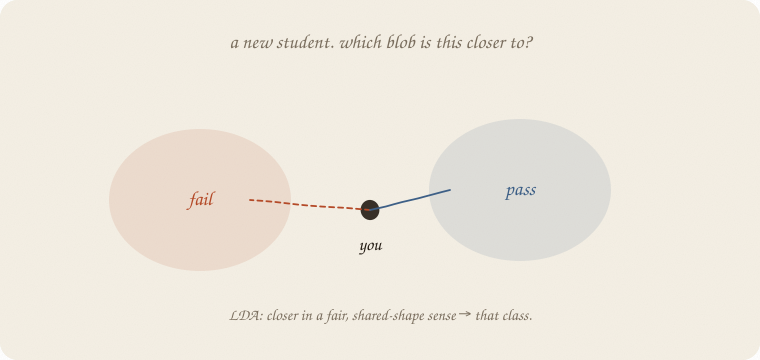
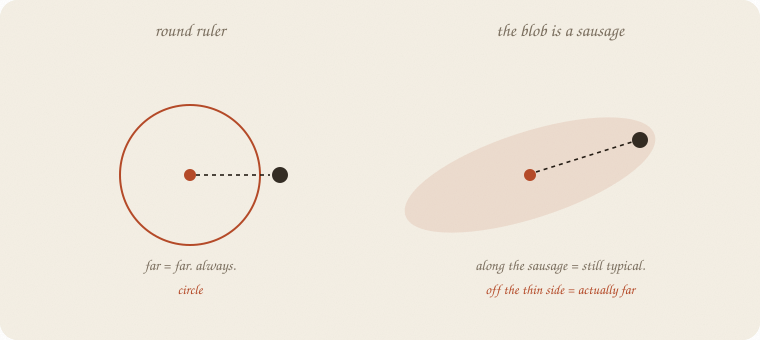
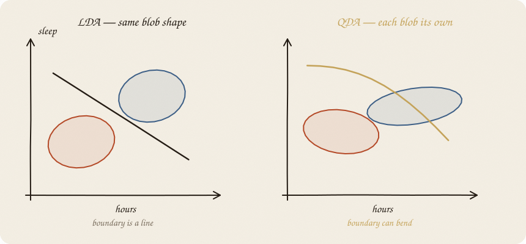
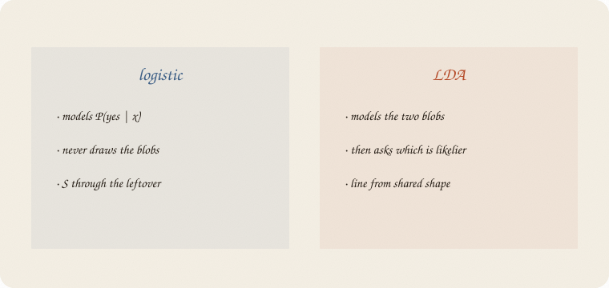

datazines · a sketchbook

Read 01 logistic regression first. Same exam. Same hours and sleep. Different religion: logistic never drew the clouds. LDA starts with the clouds.
Flip it like a notebook. One page = one idea. Done.
Logistic asked: given these hours, what’s P(pass)? Then a cut.
LDA asks a ruder, older question:
If passers look like this oval, and failers look like that oval, which oval is this new student closer to?
Same y: pass / fail.
Same levers: hours, sleep.
Different object: the two clouds, not the S.
Logistic can live without this picture. This notebook starts from it.
Imagine the scatter: hours vs sleep. Failers clump left. Passers clump right. Each clump has a center (the average failer, the average passer).

On this pass/fail class (eighty students, same recipe as logistic), the fitted centers are roughly:
| hours | sleep | |
|---|---|---|
| fail | 2.0 | 6.6 |
| pass | 4.1 | 6.7 |
Sleep barely moves. Hours does the separating. The picture is already a story: passers studied more; they did not sleep more.
Someone walks in: 3 hours of studying, 7 of sleep. Not in the old cloud.

LDA: measure how close they are to each center — not with a round ruler if the blob is a sausage.
Hours stretch more than sleep. A student far along the long axis can still be a typical failer. A student a little off the thin side is actually weird for that blob.

People call that oval-aware ruler Mahalanobis. Name later. Job now: along the sausage is cheap; off the thin side is expensive.
If the two blobs have the same sausage shape, the set of points equally close to both centers is a straight line. That line is LDA.
You still see two blobs. Fail, and pass. Two rooms. Two centers.
LDA (linear): both rooms use the same sausage shape. Only the center moves. Then the fence between them is a line.
QDA (quadratic): each room gets its own oval — failers maybe round, passers a flat sausage. Still two ovals. The fence still sits between them. It just bends.

QDA is the first gentle curve in this series that is not a kernel and not a tree. It is still “two Gaussians fighting.” Only the fight is allowed to be unfair in shape.
That extra freedom costs data. Each oval has to learn its own stretch. Two levers, eighty people: often fine. Five levers, eighty people: each blob wants a center plus a 5×5 sausage (about 20 knobs a class); 40 people per class is tight. Train looks clever, the next person not. If you cannot see the shapes differ, stay LDA.
Name cheat:

| logistic | LDA | |
|---|---|---|
| models | P(pass | x) | P(x | class), then Bayes → P(class | x) |
| blobs | never drawn | the whole point |
| boundary | a line (in score-land, an S) | a line, if shapes are shared |
| extra assumption | linear score | Gaussian ovals, same shape |
On this class, hours+sleep, they almost agree:
When the blobs really are ovals, LDA and logistic are cousins. When they are not, logistic often shrugs more politely — it never promised a Gaussian.
QDA is the one that can leave logistic behind, if the ovals truly differ. It can also overfit: two full shapes, less data.
If you keep only one thing:
logistic models the S. LDA models two blobs. Same exam, different religion.
Same pass/fail class as logistic — eighty students, not the thirty graders on the ridge page. y = pass. Features = hours, sleep. Split 70/30.
import numpy as np
from sklearn.discriminant_analysis import (
LinearDiscriminantAnalysis,
QuadraticDiscriminantAnalysis,
)
from sklearn.linear_model import LogisticRegression
from sklearn.model_selection import train_test_split
rng = np.random.default_rng(7)
n = 80
hours = rng.uniform(1, 6, n)
sleep = rng.uniform(4, 9, n)
tutor = (rng.random(n) > 0.6).astype(float)
z = -3.2 + 1.05 * hours + 0.25 * (sleep - 6.5) + 0.7 * tutor
passed = (rng.random(n) < 1 / (1 + np.exp(-z))).astype(int)
X = np.column_stack([hours, sleep])
Xtr, Xte, ytr, yte = train_test_split(X, passed, test_size=0.3, random_state=0)
lda = LinearDiscriminantAnalysis().fit(Xtr, ytr)
qda = QuadraticDiscriminantAnalysis().fit(Xtr, ytr)
log = LogisticRegression().fit(Xtr, ytr)
print("LDA means (fail, then pass):")
print(np.round(lda.means_, 2))
print("LDA P(pass | 2h, 5s) =", round(lda.predict_proba([[2, 5]])[0, 1], 2))
print("LDA P(pass | 5h, 8s) =", round(lda.predict_proba([[5, 8]])[0, 1], 2))
print("acc LDA train/test ", round(lda.score(Xtr, ytr), 3), round(lda.score(Xte, yte), 3))
print("acc QDA train/test ", round(qda.score(Xtr, ytr), 3), round(qda.score(Xte, yte), 3))
print("acc log train/test ", round(log.score(Xtr, ytr), 3), round(log.score(Xte, yte), 3))
LDA means (fail, then pass):
[[2.01 6.6 ]
[4.1 6.73]]
LDA P(pass | 2h, 5s) = 0.11
LDA P(pass | 5h, 8s) = 0.99
acc LDA train/test 0.857 0.875
acc QDA train/test 0.821 0.875
acc log train/test 0.857 0.875
Fail center: ~2 hours. Pass center: ~4 hours. Sleep almost tied.
2 hours + 5 sleep → P(pass) 0.11. 5 hours + 8 sleep → 0.99.
On this split, LDA, QDA, and logistic tie on the test set. QDA is a hair worse on train — not a miracle curve today. The blobs did not need different shapes.
| word | meaning |
|---|---|
| blob / oval | Gaussian cloud of one class |
| center | class mean |
| LDA | shared shape → straight boundary |
| QDA | own shapes → curved boundary |
| logistic | S, no blobs |
Reach for LDA when
Reach for QDA when
Skip both when
Pays you: a picture of two clouds. LDA is stable. QDA is the cheapest bent boundary in the house.
Costs you: Gaussian faith. QDA eats data. A tie with logistic is common — then the extra religion did not pay rent.
Twin of logistic, not its parent. A fence with a gutter: 04 SVM. A boundary made of questions: 01 decision tree.
Flip it like a notebook. One page = one idea.